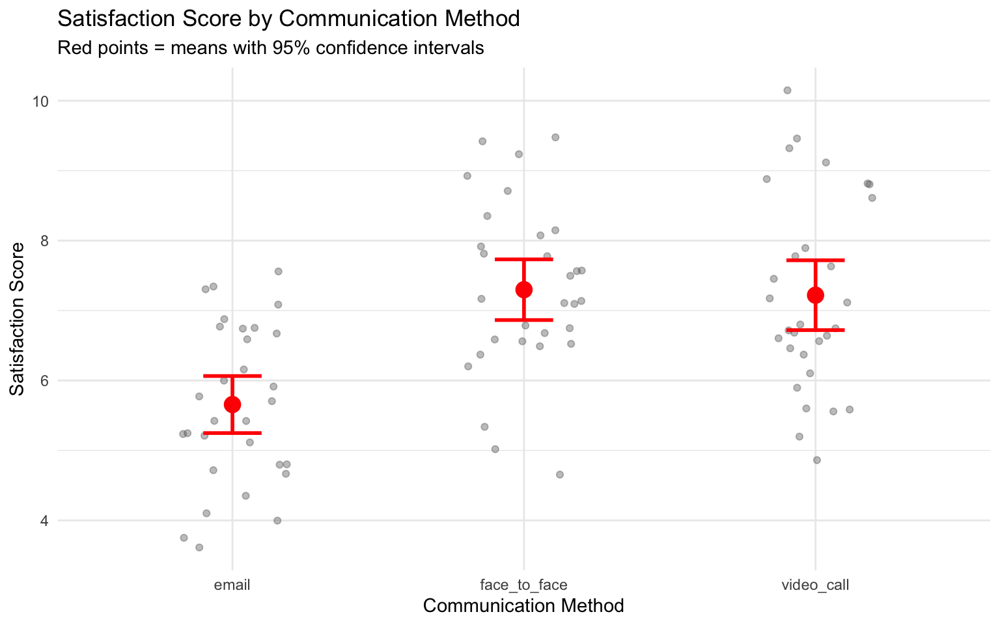

Code
# Load required packages
library(ggplot2)
library(dplyr)
library(broom)
library(effectsize)
library(car)
# Set seed for reproducibility
set.seed(42)90-Minute Session Guide
Duration: 90 minutes
Format: Live coding demonstration + guided exercise
Datasets: All created via simulation code below
By the end of this lab, students will be able to:
| Time | Section | Duration |
|---|---|---|
| 0:00-0:05 | Introduction & Setup | 5 min |
| 0:05-0:35 | Linear Regression | 30 min |
| 0:35-0:70 | Experimental Analysis | 35 min |
| 0:70-0:90 | Guided Exercise | 20 min |
Run this code before the lab to create all datasets.
# Load required packages
library(ggplot2)
library(dplyr)
library(broom)
library(effectsize)
library(car)
# Set seed for reproducibility
set.seed(42)Purpose: Demonstrate simple vs. multiple regression and omitted variable bias
# Generate marketing dataset
n <- 100
ad_spend <- runif(n, 10, 100)
website_traffic <- 50 + 0.8 * ad_spend + rnorm(n, 0, 10)
sales_revenue <- 20 + 2.2 * ad_spend + 1.0 * website_traffic + rnorm(n, 0, 15)
marketing_data <- data.frame(
ad_spend = ad_spend,
website_traffic = website_traffic,
sales_revenue = sales_revenue
)
# Save for students
write.csv(marketing_data, "marketing_data.csv", row.names = FALSE)
head(marketing_data) ad_spend website_traffic sales_revenue
1 92.33254 127.08529 349.6064
2 94.33679 117.63104 321.8988
3 35.75256 94.35932 210.5225
4 84.74029 124.22122 326.5452
5 67.75710 105.10328 267.1512
6 56.71864 98.14042 224.3476Purpose: Demonstrate exponential growth and log transformation
# Generate exponential growth data
years <- 1:20
revenue <- 50000 * exp(0.12 * years) + rnorm(20, 0, 20000)
firm_growth_data <- data.frame(
year = years,
revenue = revenue
)
# Save for students
write.csv(firm_growth_data, "firm_growth_data.csv", row.names = FALSE)
head(firm_growth_data) year revenue
1 1 34451.72
2 2 64543.47
3 3 47696.55
4 4 84604.10
5 5 117060.06
6 6 82044.19Purpose: Demonstrate independent samples t-test
# Generate between-subjects leadership data
n_per_group <- 30
leadership_study_between <- data.frame(
participant_id = 1:(2 * n_per_group),
group = rep(c("control", "training"), each = n_per_group),
team_performance = c(
rnorm(n_per_group, mean = 75, sd = 9), # control
rnorm(n_per_group, mean = 84, sd = 9) # training
)
)
# Save for students
write.csv(leadership_study_between, "leadership_study_between.csv", row.names = FALSE)
head(leadership_study_between) participant_id group team_performance
1 1 control 80.16377
2 2 control 75.41223
3 3 control 76.41671
4 4 control 78.88409
5 5 control 71.43105
6 6 control 86.78980Purpose: Demonstrate one-way ANOVA with three groups
# Generate communication study data with 3 groups
n_per_group <- 30
communication_study <- data.frame(
participant_id = 1:(3 * n_per_group),
communication_method = rep(c("email", "video_call", "face_to_face"), each = n_per_group),
satisfaction_score = c(
rnorm(n_per_group, mean = 5.8, sd = 1.3), # email
rnorm(n_per_group, mean = 7.0, sd = 1.3), # video_call
rnorm(n_per_group, mean = 7.5, sd = 1.3) # face_to_face
)
)
# Save for students
write.csv(communication_study, "communication_study.csv", row.names = FALSE)
head(communication_study) participant_id communication_method satisfaction_score
1 1 email 6.770803
2 2 email 5.246826
3 3 email 4.796293
4 4 email 5.998593
5 5 email 7.085176
6 6 email 5.704504Purpose: Student guided exercise combining regression and t-test
# Generate website A/B test data
n_per_design <- 50
exercise_data <- data.frame(
user_id = 1:(2 * n_per_design),
design = rep(c("Simple", "Complex"), each = n_per_design),
previous_visits = rpois(2 * n_per_design, lambda = 8),
time_on_site = c(
rnorm(n_per_design, mean = 180, sd = 40), # Simple
rnorm(n_per_design, mean = 240, sd = 50) # Complex
)
)
# Conversion rate depends on time_on_site and previous_visits
exercise_data <- exercise_data %>%
mutate(
conversion_prob = plogis(-2 + 0.01 * time_on_site + 0.05 * previous_visits),
converted = rbinom(n(), 1, conversion_prob)
)
# Save for students
write.csv(exercise_data, "exercise_data.csv", row.names = FALSE)
head(exercise_data) user_id design previous_visits time_on_site conversion_prob converted
1 1 Simple 10 179.63774 0.5735567 1
2 2 Simple 10 121.67466 0.4296563 1
3 3 Simple 4 207.78119 0.5690097 1
4 4 Simple 8 81.54658 0.3133435 1
5 5 Simple 8 185.73159 0.5639764 1
6 6 Simple 5 164.35112 0.4734029 0“Welcome! Today we’re focusing on practical implementation of two key analysis methods: linear regression and experimental data analysis. You should have read the tutorials, but don’t worry - we’ll work through the essential techniques together with hands-on examples.”
# Students run this
library(ggplot2)
library(dplyr)
library(broom)
library(effectsize)
library(car)Key Concept: Show how adding variables changes interpretation from “total association” to “direct effect controlling for other variables”
Common Student Misconception: Students think multiple regression just “adds more predictors” - emphasize it changes what each coefficient means!
# STEP 1: Simple regression
model_simple <- lm(sales_revenue ~ ad_spend, data = marketing_data)
summary(model_simple)
Call:
lm(formula = sales_revenue ~ ad_spend, data = marketing_data)
Residuals:
Min 1Q Median 3Q Max
-38.000 -14.155 -1.484 10.909 48.889
Coefficients:
Estimate Std. Error t value Pr(>|t|)
(Intercept) 67.52803 4.06035 16.63 <2e-16 ***
ad_spend 3.03673 0.06417 47.32 <2e-16 ***
---
Signif. codes: 0 '***' 0.001 '**' 0.01 '*' 0.05 '.' 0.1 ' ' 1
Residual standard error: 17.35 on 98 degrees of freedom
Multiple R-squared: 0.9581, Adjusted R-squared: 0.9576
F-statistic: 2239 on 1 and 98 DF, p-value: < 2.2e-16Pause and ask: “What does the coefficient for ad_spend mean?”
Expected answer: For every €1 increase in ad spending, sales revenue increases by approximately €{coefficient} on average.
# STEP 2: Multiple regression
model_multiple <- lm(sales_revenue ~ ad_spend + website_traffic,
data = marketing_data)
summary(model_multiple)
Call:
lm(formula = sales_revenue ~ ad_spend + website_traffic, data = marketing_data)
Residuals:
Min 1Q Median 3Q Max
-31.4339 -9.9212 -0.4957 9.7412 31.2228
Coefficients:
Estimate Std. Error t value Pr(>|t|)
(Intercept) 15.7527 7.9513 1.981 0.0504 .
ad_spend 2.1017 0.1407 14.940 < 2e-16 ***
website_traffic 1.1021 0.1540 7.158 1.58e-10 ***
---
Signif. codes: 0 '***' 0.001 '**' 0.01 '*' 0.05 '.' 0.1 ' ' 1
Residual standard error: 14.11 on 97 degrees of freedom
Multiple R-squared: 0.9726, Adjusted R-squared: 0.972
F-statistic: 1719 on 2 and 97 DF, p-value: < 2.2e-16Key teaching moment: Extract and compare coefficients
# Extract coefficients for comparison
coef_simple <- coef(model_simple)["ad_spend"]
coef_multiple <- coef(model_multiple)["ad_spend"]
cat("Simple model coefficient:", round(coef_simple, 3), "\n")Simple model coefficient: 3.037 cat("Multiple model coefficient:", round(coef_multiple, 3), "\n")Multiple model coefficient: 2.102 cat("Difference (bias):", round(coef_simple - coef_multiple, 3), "\n")Difference (bias): 0.935 “Notice how the coefficient for ad_spend changed from 3.04 to 2.1. This is because the simple model was confounding the effects of ad spending and website traffic. The multiple regression gives us the direct effect (ceteris paribus effect) of ad spending, controlling for website traffic.”
Draw on board/slides:
Simple model: Sales ~ Ad_spend
Problem: Ad_spend → Website_traffic → Sales
Ad_spend → Sales
The simple model attributes BOTH effects to ad_spend!
Multiple model: Sales ~ Ad_spend + Website_traffic
Solution: Separates direct effect from indirect effectAsk class: “If we ran a simple regression of Sales on Website Traffic only, would we overestimate or underestimate the effect of traffic?”
Answer: Overestimate - because traffic is correlated with ad spending which also affects sales.
Goal: Show students practical workflow for checking model quality Focus: R² and basic diagnostic plots
# Calculate R² manually to show what it means
y_actual <- marketing_data$sales_revenue
y_fitted <- predict(model_simple)
y_mean <- mean(y_actual)
# Components
TSS <- sum((y_actual - y_mean)^2) # Total Sum of Squares
RSS <- sum((y_actual - y_fitted)^2) # Residual Sum of Squares
# R²
r_squared_manual <- 1 - (RSS / TSS)
r_squared_r <- summary(model_simple)$r.squared
cat("Manual R² calculation:", round(r_squared_manual, 4), "\n")Manual R² calculation: 0.9581 cat("R's R² calculation:", round(r_squared_r, 4), "\n")R's R² calculation: 0.9581 Interpretation:
“R² = 0.96 means our model explains 95.8% of the variation in sales revenue. The remaining 4.2% is unexplained.”
# Create augmented data
model_data <- augment(model_multiple)
# Two key plots
library(gridExtra)
Attaching package: 'gridExtra'The following object is masked from 'package:dplyr':
combinep1 <- ggplot(model_data, aes(x = .fitted, y = .resid)) +
geom_point(alpha = 0.6) +
geom_hline(yintercept = 0, linetype = "dashed", color = "red") +
geom_smooth(se = FALSE, color = "blue") +
labs(title = "Residuals vs Fitted",
subtitle = "Should show random scatter (no pattern)",
x = "Fitted Values",
y = "Residuals") +
theme_minimal()
p2 <- ggplot(model_data, aes(sample = .resid)) +
stat_qq() +
stat_qq_line(color = "red") +
labs(title = "Normal Q-Q Plot",
subtitle = "Points should follow red line",
x = "Theoretical Quantiles",
y = "Sample Quantiles") +
theme_minimal()
grid.arrange(p1, p2, ncol = 2)`geom_smooth()` using method = 'loess' and formula = 'y ~ x'
“These diagnostic plots help us check our model assumptions:
- Left plot: Residuals vs Fitted - we want random scatter with no clear pattern. A pattern would suggest we’re missing something in our model.
- Right plot: Q-Q plot - points should follow the red line, indicating residuals are normally distributed.”
Quick check: “Do these plots look okay?” (Yes, they do)
Why this matters: Real business data often shows exponential growth (revenue over time, user growth, compound returns)
Key insight: Log transformation linearizes exponential relationships
# Visualize the exponential relationship
ggplot(firm_growth_data, aes(x = year, y = revenue)) +
geom_point(size = 3, alpha = 0.8) +
geom_smooth(method = "lm", se = FALSE, color = "red", linewidth = 1) +
geom_smooth(method = "loess", se = FALSE, color = "blue", linewidth = 1) +
labs(title = "Company Revenue Growth Over Time",
subtitle = "Red = Linear fit (inadequate), Blue = Flexible fit",
x = "Year",
y = "Revenue (EUR)") +
scale_y_continuous(labels = scales::comma) +
theme_minimal()`geom_smooth()` using formula = 'y ~ x'
`geom_smooth()` using formula = 'y ~ x'
Point out: “The red linear line completely fails to capture the exponential pattern!”
# Create log-transformed variable
firm_growth_data <- firm_growth_data %>%
mutate(log_revenue = log(revenue))
# Fit both models
model_linear <- lm(revenue ~ year, data = firm_growth_data)
model_log <- lm(log_revenue ~ year, data = firm_growth_data)
# Compare R²
r2_linear <- summary(model_linear)$r.squared
r2_log <- summary(model_log)$r.squared
cat("Linear model R²:", round(r2_linear, 4), "\n")Linear model R²: 0.9188 cat("Log model R²:", round(r2_log, 4), "\n")Log model R²: 0.9583 # Plot log-transformed data
ggplot(firm_growth_data, aes(x = year, y = log_revenue)) +
geom_point(size = 3, alpha = 0.8) +
geom_smooth(method = "lm", se = FALSE, color = "blue", linewidth = 1) +
labs(title = "Log(Revenue) vs Year",
subtitle = "Perfect linear relationship after transformation!",
x = "Year",
y = "Log(Revenue)") +
theme_minimal()`geom_smooth()` using formula = 'y ~ x'
What to emphasize:
“After log transformation, the relationship becomes perfectly linear! The R² jumped from 0.92 to 0.96.”
# Get coefficient for year
coef_log <- coef(model_log)["year"]
percentage_change <- (exp(coef_log) - 1) * 100
cat("Coefficient in log model:", round(coef_log, 4), "\n")Coefficient in log model: 0.1304 cat("This means:", round(percentage_change, 2), "% growth per year\n")This means: 13.93 % growth per yearKey point for interpretation:
“When we log-transform the dependent variable, coefficients represent percentage changes. Each year is associated with approximately 13.9% growth in revenue.”
# Create predictions on original scale
predictions <- firm_growth_data %>%
mutate(
linear_pred = predict(model_linear),
log_pred = exp(predict(model_log)) # Back-transform!
)
ggplot(predictions, aes(x = year)) +
geom_point(aes(y = revenue), size = 3, alpha = 0.8) +
geom_line(aes(y = linear_pred), color = "red", linewidth = 1.2) +
geom_line(aes(y = log_pred), color = "blue", linewidth = 1.2) +
labs(title = "Model Predictions Comparison",
subtitle = "Red = Linear model (poor fit), Blue = Log model (excellent fit)",
x = "Year",
y = "Revenue (EUR)") +
scale_y_continuous(labels = scales::comma) +
theme_minimal()
Final message:
“The log model (blue) captures the exponential growth pattern perfectly, while the linear model (red) systematically misses the pattern. This is why data transformation is so important!”
Research Question: Does leadership training improve team performance?
Key workflow: 1. Explore data visually 2. Check assumptions 3. Run test 4. Calculate effect size 5. Interpret for business decisions
ggplot(leadership_study_between, aes(x = group, y = team_performance, fill = group)) +
geom_boxplot(alpha = 0.7) +
geom_jitter(width = 0.2, alpha = 0.5) +
stat_summary(fun = mean, geom = "point", shape = 23, size = 3, fill = "red") +
labs(title = "Team Performance by Group",
subtitle = "Red diamonds show group means",
x = "Group",
y = "Team Performance Score") +
theme_minimal() +
theme(legend.position = "none")
Ask class: “Based on this plot, do you think there’s a difference?”
# Normality test for each group
shapiro_control <- shapiro.test(
filter(leadership_study_between, group == "control")$team_performance
)
shapiro_training <- shapiro.test(
filter(leadership_study_between, group == "training")$team_performance
)
cat("Shapiro-Wilk test for control group: p =",
round(shapiro_control$p.value, 4), "\n")Shapiro-Wilk test for control group: p = 0.9312 cat("Shapiro-Wilk test for training group: p =",
round(shapiro_training$p.value, 4), "\n")Shapiro-Wilk test for training group: p = 0.4427 # Equal variances test
levene_result <- leveneTest(team_performance ~ group,
data = leadership_study_between)Warning in leveneTest.default(y = y, group = group, ...): group coerced to
factor.cat("\nLevene's test for equal variances: p =",
round(levene_result$`Pr(>F)`[1], 4), "\n")
Levene's test for equal variances: p = 0.1078 Interpretation:
“Both p-values are > 0.05, so we cannot reject the hypotheses of normality and equal variances. We can proceed with the standard t-test.”
t_result <- t.test(
team_performance ~ group,
data = leadership_study_between,
var.equal = TRUE
)
print(t_result)
Two Sample t-test
data: team_performance by group
t = -3.7092, df = 58, p-value = 0.0004673
alternative hypothesis: true difference in means between group control and group training is not equal to 0
95 percent confidence interval:
-12.154597 -3.634084
sample estimates:
mean in group control mean in group training
75.92457 83.81891 Interpretation guide:
mean_diff <- diff(t_result$estimate)
p_value <- t_result$p.value
ci_lower <- t_result$conf.int[1]
ci_upper <- t_result$conf.int[2]
cat("Mean difference:", round(mean_diff, 2), "\n")Mean difference: 7.89 cat("95% CI: [", round(ci_lower, 2), ",", round(ci_upper, 2), "]\n")95% CI: [ -12.15 , -3.63 ]cat("p-value:", format.pval(p_value, digits = 3), "\n")p-value: 0.000467 “The training group scored 7.9 points higher on average. With p < 0.001, this difference is highly statistically significant.”
cohens_d_result <- cohens_d(team_performance ~ group,
data = leadership_study_between)
print(cohens_d_result)Cohen's d | 95% CI
--------------------------
-0.96 | [-1.49, -0.42]
- Estimated using pooled SD.Interpretation:
d_value <- abs(cohens_d_result$Cohens_d)
effect_label <- ifelse(d_value < 0.5, "small",
ifelse(d_value < 0.8, "medium", "large"))
cat("Cohen's d =", round(d_value, 2), "(", effect_label, "effect)\n")Cohen's d = 0.96 ( large effect)“Cohen’s d = 0.96 indicates a large effect. This means the difference is not only statistically significant but also practically meaningful for business decisions.”
Business decision:
“Based on these results, the leadership training shows a large, significant improvement in team performance. If the training costs less than the value of a 7.9-point performance improvement, it’s worth implementing.”
Research Question: Which communication method leads to highest satisfaction?
Key concept: ANOVA tests whether at least one group differs from others (not which specific groups differ - that requires post-hoc tests)
# Calculate means for plotting
comm_means <- communication_study %>%
group_by(communication_method) %>%
summarise(
mean_satisfaction = mean(satisfaction_score),
se = sd(satisfaction_score) / sqrt(n())
)
ggplot(communication_study, aes(x = communication_method, y = satisfaction_score)) +
geom_jitter(width = 0.2, alpha = 0.4, color = "gray40") +
geom_point(data = comm_means, aes(y = mean_satisfaction),
size = 4, color = "red") +
geom_errorbar(data = comm_means,
aes(y = mean_satisfaction,
ymin = mean_satisfaction - 1.96*se,
ymax = mean_satisfaction + 1.96*se),
width = 0.2, color = "red", linewidth = 1) +
labs(title = "Satisfaction Score by Communication Method",
subtitle = "Red points = means with 95% confidence intervals",
x = "Communication Method",
y = "Satisfaction Score") +
theme_minimal()
# Fit model
anova_model <- aov(satisfaction_score ~ communication_method,
data = communication_study)
summary(anova_model) Df Sum Sq Mean Sq F value Pr(>F)
communication_method 2 51.46 25.731 16.37 9.21e-07 ***
Residuals 87 136.72 1.571
---
Signif. codes: 0 '***' 0.001 '**' 0.01 '*' 0.05 '.' 0.1 ' ' 1Interpretation:
anova_summary <- summary(anova_model)
f_value <- anova_summary[[1]]$`F value`[1]
p_value_anova <- anova_summary[[1]]$`Pr(>F)`[1]
cat("F-statistic =", round(f_value, 2), "\n")F-statistic = 16.37 cat("p-value:", format.pval(p_value_anova, digits = 3), "\n")p-value: 9.21e-07 “The very small p-value (p < 0.001) tells us that at least one communication method produces significantly different satisfaction scores than the others. But it doesn’t tell us which methods differ.”
Key teaching point:
# Show that lm() gives identical results
lm_model <- lm(satisfaction_score ~ communication_method,
data = communication_study)
anova(lm_model)Analysis of Variance Table
Response: satisfaction_score
Df Sum Sq Mean Sq F value Pr(>F)
communication_method 2 51.462 25.7312 16.374 9.212e-07 ***
Residuals 87 136.716 1.5714
---
Signif. codes: 0 '***' 0.001 '**' 0.01 '*' 0.05 '.' 0.1 ' ' 1“ANOVA is just a special case of regression! When we use categorical predictors, R creates dummy variables automatically.”
summary(lm_model)$coefficients Estimate Std. Error t value Pr(>|t|)
(Intercept) 5.656295 0.2288701 24.713991 4.231093e-41
communication_methodface_to_face 1.641875 0.3236713 5.072663 2.195718e-06
communication_methodvideo_call 1.563436 0.3236713 4.830320 5.797655e-06Explain:
“Since ‘email’ comes first alphabetically, it’s the reference group. The coefficients show:
- Intercept = mean satisfaction for email group
- face_to_face coefficient = difference between face_to_face and email
- video_call coefficient = difference between video_call and email”
eta_sq <- eta_squared(anova_model)For one-way between subjects designs, partial eta squared is equivalent
to eta squared. Returning eta squared.print(eta_sq)# Effect Size for ANOVA
Parameter | Eta2 | 95% CI
------------------------------------------
communication_method | 0.27 | [0.14, 1.00]
- One-sided CIs: upper bound fixed at [1.00].Interpretation:
eta_value <- eta_sq$Eta2[1]
cat("η² =", round(eta_value, 3), "\n")η² = 0.273 cat("Communication method explains", round(eta_value * 100, 1),
"% of variance in satisfaction\n")Communication method explains 27.3 % of variance in satisfactiontukey_result <- TukeyHSD(anova_model)
print(tukey_result) Tukey multiple comparisons of means
95% family-wise confidence level
Fit: aov(formula = satisfaction_score ~ communication_method, data = communication_study)
$communication_method
diff lwr upr p adj
face_to_face-email 1.64187523 0.8700877 2.4136627 0.0000065
video_call-email 1.56343582 0.7916483 2.3352233 0.0000172
video_call-face_to_face -0.07843941 -0.8502269 0.6933481 0.9681547Create visualization:
# Convert to data frame for plotting
tukey_df <- as.data.frame(tukey_result$communication_method)
tukey_df$comparison <- rownames(tukey_df)
ggplot(tukey_df, aes(x = comparison, y = diff)) +
geom_point(size = 3) +
geom_errorbar(aes(ymin = lwr, ymax = upr), width = 0.2) +
geom_hline(yintercept = 0, linetype = "dashed", color = "red") +
coord_flip() +
labs(title = "Pairwise Comparisons (Tukey HSD)",
subtitle = "Significant if confidence interval doesn't include zero",
x = "Comparison",
y = "Mean Difference") +
theme_minimal()
Interpretation:
“The post-hoc tests reveal:
- Face-to-face vs email: Significant difference (CI doesn’t include 0)
- Video_call vs email: Significant difference
- Video_call vs face_to_face: NOT significant (CI includes 0)
Conclusion: Both face-to-face and video calls produce higher satisfaction than email, but face-to-face and video don’t differ significantly from each other.”
Note: Students haven’t learned about interactions formally in the tutorials. Keep this light and conceptual.
Goal: Plant the seed that effects can depend on other variables
“So far we’ve looked at one factor at a time. But what if the effect of one variable depends on another variable? That’s what factorial designs let us explore.”
On board/slide:
Research Question: Does feedback type (positive vs. critical)
affect performance improvement?
But wait... does this depend on experience level?
Maybe:
- Novices benefit from positive feedback (encouragement)
- Experts benefit from critical feedback (growth mindset)
This is called an INTERACTION EFFECT.
Point out:
“Notice how the lines cross? This tells us the effect of feedback type is different for novices vs. experts. That’s an interaction!
- For novices: Positive feedback works better
- For experts: Critical feedback works better
If there was no interaction, the lines would be parallel.”
“Interactions are everywhere in business:
- Does advertising effectiveness depend on customer segment?
- Does training effectiveness depend on prior knowledge?
- Does pricing strategy depend on market conditions?
The tutorials cover how to test for interactions with two-way ANOVA. For now, just remember: effects can depend on context.”
Transition to exercise:
“In your exercise, you’ll work with simpler designs - just regression and t-tests. But keep interactions in mind for future analyses!”
You have data from an A/B test of two website designs:
Variables measured:
design: Which design the user saw (Simple vs. Complex)time_on_site: Time spent on site (seconds)previous_visits: Number of previous visits to the siteconverted: Whether user made a purchase (1 = yes, 0 = no)Dataset: exercise_data.csv
Task 1: Regression Analysis
time_on_site vs convertedconverted ~ time_on_sitetime_on_siteTask 2: Compare Designs
time_on_site between the two designsTask 3: Omitted Variable Bias (Challenge)
previous_visits to your regression modeltime_on_site change?# Load data
exercise_data <- read.csv("exercise_data.csv")
# a. Scatter plot
ggplot(exercise_data, aes(x = time_on_site, y = converted)) +
geom_point(alpha = 0.5) +
geom_smooth(method = "lm", se = TRUE) +
labs(title = "Conversion vs Time on Site",
x = "Time on Site (seconds)",
y = "Converted (0/1)") +
theme_minimal()
# b. Simple regression
model_exercise_simple <- lm(converted ~ time_on_site, data = exercise_data)
summary(model_exercise_simple)
# c. Interpretation
coef_time <- coef(model_exercise_simple)["time_on_site"]
cat("For every additional second on site, conversion probability increases by",
round(coef_time, 4), "\n")
# d. R²
r2 <- summary(model_exercise_simple)$r.squared
cat("R² =", round(r2, 4), "meaning the model explains",
round(r2*100, 1), "% of variance\n")# a. t-test
t_test_design <- t.test(time_on_site ~ design, data = exercise_data)
print(t_test_design)
# b. Effect size
cohens_d_design <- cohens_d(time_on_site ~ design, data = exercise_data)
print(cohens_d_design)
# c. Interpretation
cat("Complex design keeps users", abs(round(diff(t_test_design$estimate), 1)),
"seconds longer on average\n")# a. Add previous_visits
model_exercise_multiple <- lm(converted ~ time_on_site + previous_visits,
data = exercise_data)
summary(model_exercise_multiple)
# b. Compare coefficients
coef_simple <- coef(model_exercise_simple)["time_on_site"]
coef_multiple <- coef(model_exercise_multiple)["time_on_site"]
cat("Simple model coefficient:", round(coef_simple, 5), "\n")
cat("Multiple model coefficient:", round(coef_multiple, 5), "\n")
cat("Change:", round(coef_multiple - coef_simple, 5), "\n")
# c. Interpretation
# If coefficient changed substantially, there was omitted variable bias
# This happens when previous_visits correlates with both time_on_site
# and convertedCall on students to share:
Key takeaways to emphasize:
✅ Multiple regression controls for confounders and gives ceteris paribus effects
✅ Omitted variable bias happens when we leave out relevant variables
✅ Log transformation linearizes exponential relationships
✅ R² measures explained variance, but doesn’t tell the whole story
✅ Diagnostic plots check model assumptions
✅ Always check assumptions before running tests
✅ t-tests compare two groups
✅ ANOVA compares three or more groups
✅ Effect sizes (Cohen’s d, η²) tell us about practical significance
✅ Post-hoc tests identify which specific groups differ
✅ ANOVA is regression with categorical predictors
“Statistics is not just about getting significant p-values. It’s about:
- Understanding what your data can and cannot tell you
- Making valid comparisons by controlling for confounders
- Assessing practical significance, not just statistical significance
- Checking assumptions so your results are trustworthy
Practice these workflows, and you’ll be able to analyze real data effectively!”
aov() for traditional ANOVA outputlm() when you want to see coefficients or add continuous predictors